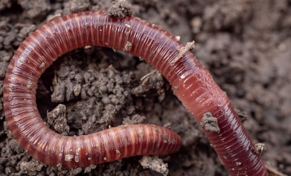
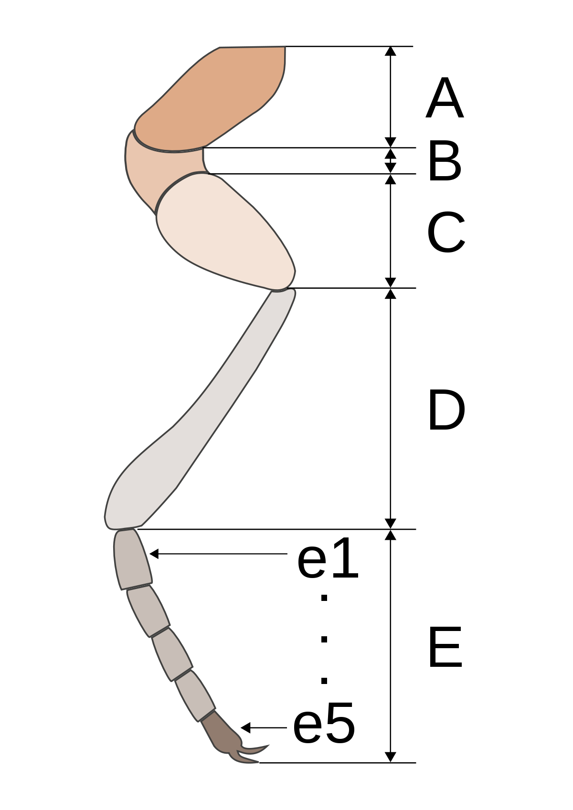
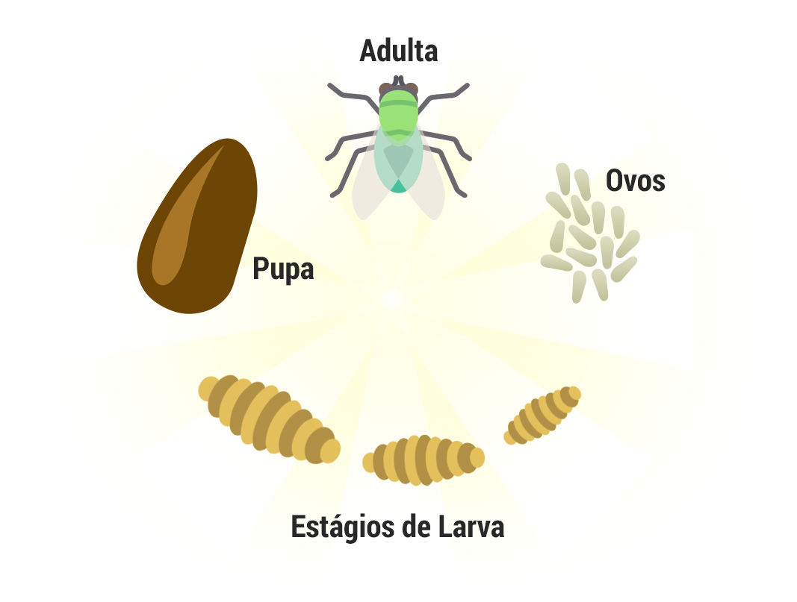

Características Gerais
Os artrópodes são um filo de invertebrados que possuem características distintas.
Eles têm um conjunto de características comuns que os distinguem de outros grupos de animais.
Esses recursos incluem:
Exoesqueleto quitinoso: Os artrópodes têm um exoesqueleto externo duro e rígido feito de quitina.
Este exoesqueleto fornece proteção ao corpo e atua como suporte estrutural.
No entanto, para crescer, os artrópodes passam por um processo chamado ecdise, onde trocam seu antigo exoesqueleto por um novo e maior.

Corpo segmentado: O corpo dos artrópodes é dividido em segmentos distintos que podem ser especializados para diferentes funções.
Eles geralmente têm três partes principais do corpo: cabeça, tórax e abdômen. Essa segmentação fornece flexibilidade e variedade de estruturas especializadas.

Apêndices articulados: Os artrópodes possuem apêndices articulados, como pernas e antenas, que são conectados a segmentos corporais. Essas articulações permitem movimentos coordenados e variados, permitindo aos artrópodes andar, nadar, cavar, pegar comida e realizar outras atividades básicas.

Metamorfose: Muitos artrópodes sofrem metamorfose, um processo de mudança estrutural e morfológica, durante o seu desenvolvimento. A metamorfose pode ser completa, onde o animal passa por diferentes estágios como larva, pupa e adulto, ou incompleta, onde há uma mudança gradativa entre os estágios juvenil e adulto.
